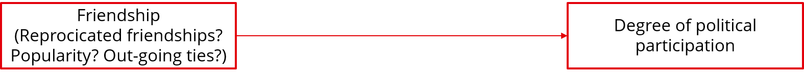
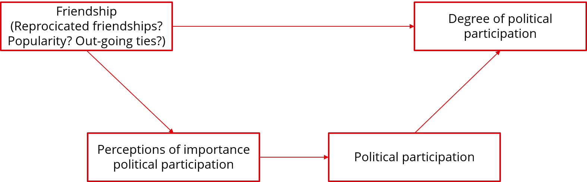

Service, activism and friendships in high school: A longitudinal social network analysis of peer influence and critical beliefs – Wegemer (2022)
Main question: To what extent do peer influence and perceptions of inequities promote civic behaviour at a predominantly low-income Latinx high school?
Main concepts:
- Service: Volunteering, organising charitable events and participating in the student government
- Activism: Participating in direct actions, campaigning for issues, and involvement in social justice groups
- Perceptions of inequities: Whether students believe that members of certain ethnic groups, people in poverty, women or LGBTQIA+ people have fewer chances to get ahead in society
Hypotheses:
1. Students’ service, activism and perceptions of inequities become more similar to the average level of their friends (socialisation effect)
2. This socialisation effect is greater for service than for activism and perceptions of inequities
3. Students’ perceptions of inequities predict increased participation in activism over time, and vice versa (participation in activism predict increased perceptions of inequities)
4. There is no relation between perceptions of inequities and service behaviour
Data:
- A survey of all students enrolled at a southern Californian high school (socionet), at two time points: March 2019 and March 2020
- Sample: All students who were enrolled (N = 354) and completed the survey in both years (N = 272, 72%)
- Network data: o Each respondent was asked to provide the first and last names of their five closest friends at the high school
Analysis method:
- A stochastic actor based model (SABM), using RSiena
Results:
1. Students’ service, activism and perceptions of inequities become more similar to the average level of their friends (socialisation effect)
- Evidence for civic socialisation for service actions, but not for activism and perceptions of inequities
2. This socialisation effect is greater for service than for activism and perceptions of inequities
- There is no effect of activism and perceptions of inequities
3. Students’ perceptions of inequities predict increased participation in activism over time, and vice versa (participation in activism predict increased perceptions of inequities)
- Perceptions of inequities do increase participation in activism, the effect the other way around is not found
4. There is no relation between perceptions of inequities and service behaviour
- Service and activism do not predict each other
Civic development within the peer context: Associations between early adolescent social connectedness and civic engagement – Oosterhoff et al (2021)
Main question: How is social connectedness associated with civic engagement among early adolescents? How does this relationship differ across gender and grade?
Main concepts:
- Different elements of civic engagement are measured separately:
Volunteering
Political engagement
Environmentalism
Civic efficacy
Social responsibility values
- Social connectedness:
Hypotheses:
1. Youth who are more socially connected, have higher levels of civic engagement
2. Social connectedness is more strongly associated with volunteering and social responsibility for girls than for boys
3. Social connectedness is more strongly associated with political engagement for boys than for girls
4. Social connectedness is more strongly associated with civic engagement for older youth than for younger youth
Data:
- A survey of all students in 6th through 8th grade from a middle school in the northwestern US
- Sample: All 250 students, of which 213 (85%) actually participated
- Network data:
Each respondent could identify up to 7 people with whom they spend the most time by selecting the names from a pre-set list
After selecting, for each person they were asked to rate how much they like spending time with that person
Analysis:
- Regression analyses, using the package suite in R
Results:
1. Youth who are more socially connected, have higher levels of civic engagement
Active youths have a higher civic efficacy; Popularity, reciprocity, betweenness and eigenvector were not related to civic efficacy
No measure of social connectedness is related to volunteering, environmentalism or social responsibility values
Youths with lower betweenness and eigenvector are more engaged in political behaviour
2. Social connectedness is more strongly associated with volunteering and social responsibility for girls than for boys
3. Social connectedness is more strongly associated with political engagement for boys than for girls
4. Social connectedness is more strongly associated with civic engagement for older youth than for younger youth
Macro, descriptive question:
Does positive peer influence affect youths’ political participation behaviour?

Micro, explanatory question:
Why does positive peer influence affect youths’ political participation / is there positive influence in friendship groups, where peers become more similar to each other with regards to the degree of political participation?
Put together:
